Every two years, halfway through a president's term, Americans vote again. Those midterms almost always cost the president's party seats, and that loss changes what the president can actually do.
Read this first: no November 2026 results exist yet. This project was built on November 2, 2026. The midterm election is on November 3, 2026, the next day. No results exist yet, and this project does not invent any. Chapter 4 covers what is at stake, forecasts from named sources with dates, and scenarios for each outcome, plus a results section clearly labeled as pending, ready to fill in after November 3. No scenario here is presented as a prediction.
View the code on GitHub How to run it
The popular vote winner lost the presidency twice. In 2000, Al Gore won the popular vote by 519,208 votes but lost the Electoral College 271 to 266. In 2016, Hillary Clinton won the popular vote by 2,984,618 votes but lost the Electoral College 304 to 227. Turnout of eligible voters rose from 51.73 percent in 1996 to 65.28 percent in 2020, with 2024 provisionally estimated at 64.30 percent. The number of states decided by under 5 points bounced between 3 (1984) and 19 (1976), with 8 each in 2020 and 2024. There is no steady decline in competitiveness in this measure.
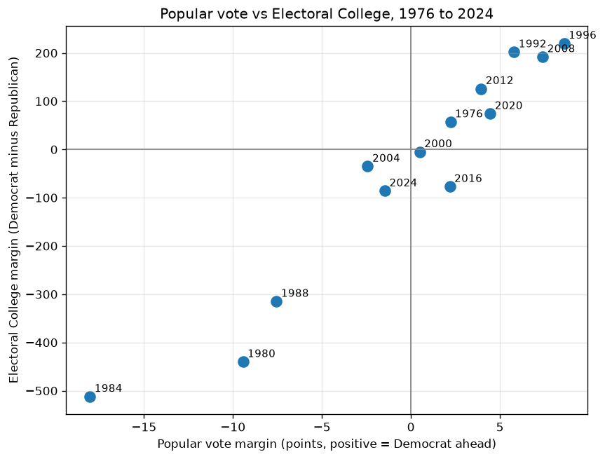
When the popular vote and the Electoral College disagree.
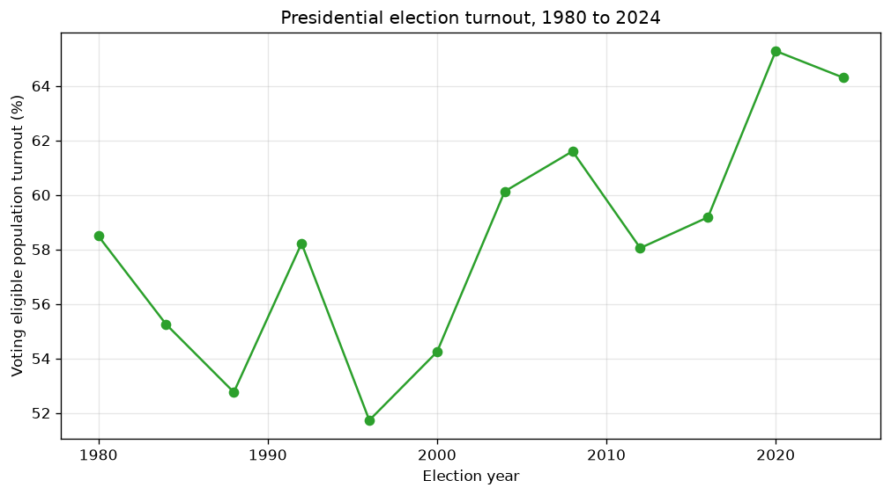
Turnout of eligible voters, 1976 to 2024.
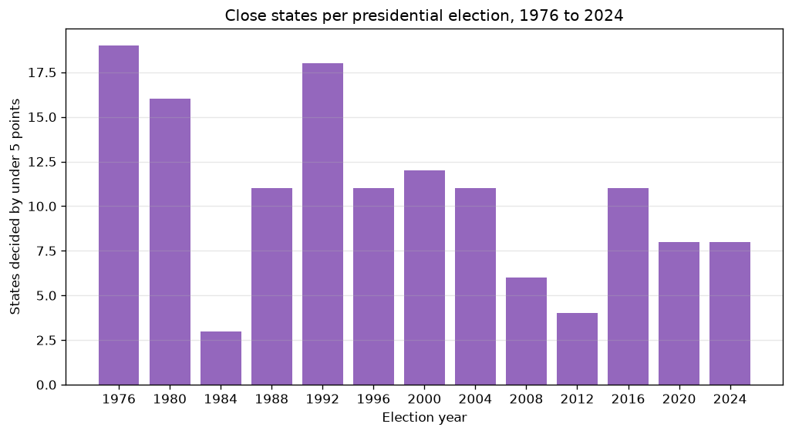
States decided by under 5 points in each election.
The president's party lost House seats in 10 of 12 midterms, by an average of 21.2 seats and a median of 14 seats. The exceptions were 1998 (Democrats gained 5) and 2002 (Republicans gained 8). In the Senate, the president's party gained seats in 3 midterms, broke even in 2, and lost seats in 7, for an average loss of 3.25 seats. Six presidents entered a midterm holding a trifecta, and five of the six lost it. The exception was Jimmy Carter in 1978. The only midterm that created a trifecta was 2002.
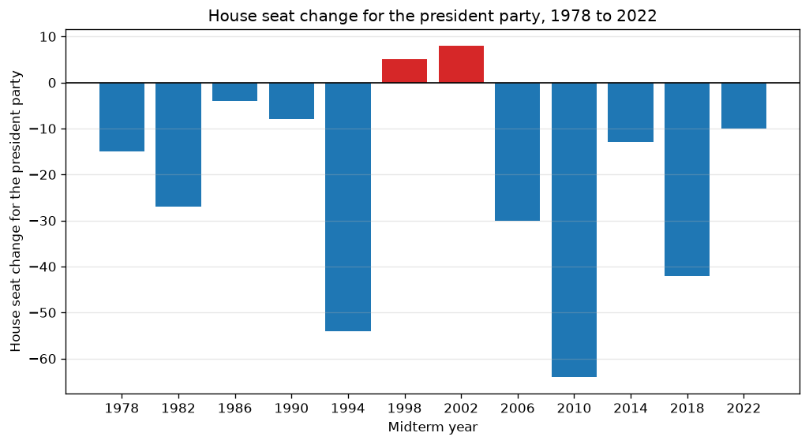
House seat change for the president's party, each midterm.
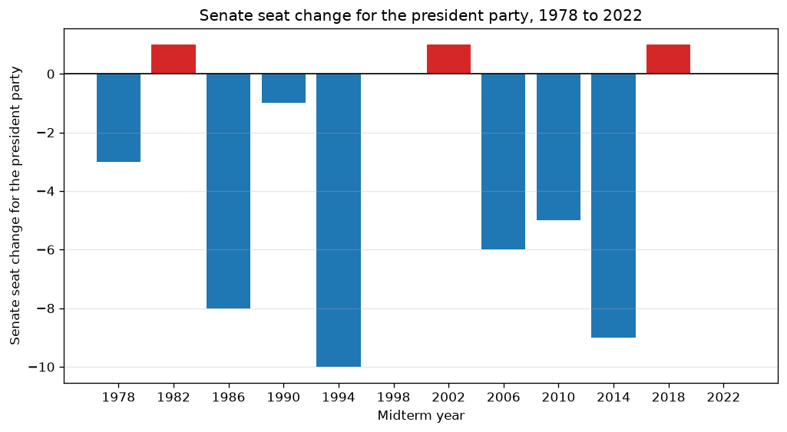
Senate seat change for the president's party, each midterm.
Presidents veto more when Congress is controlled by the other party: Ronald Reagan vetoed 78 bills and George H. W. Bush 44, while George W. Bush and Barack Obama vetoed 12 each. Executive orders are the workaround presidents use when Congress will not act, but they can be reversed by the next president. Federal judges need Senate confirmation, so losing the Senate slows confirmations. There have been six major shutdowns since 1995, totaling 123 days, and two of them happened under a unified government, which shows shutdowns are not only a divided government phenomenon. Where the numbers stop proving cause, the project says so.
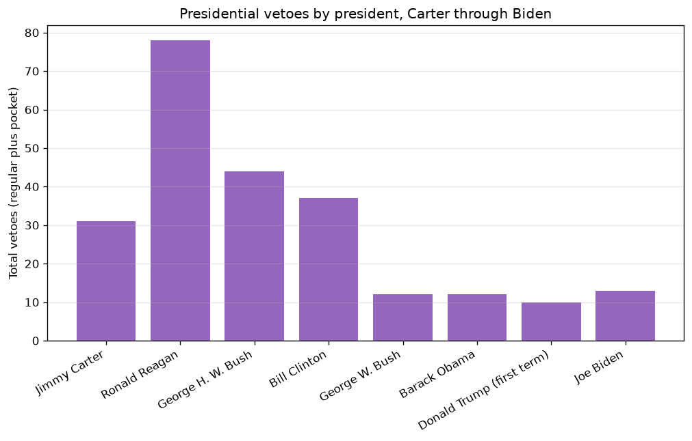
Vetoes by president.
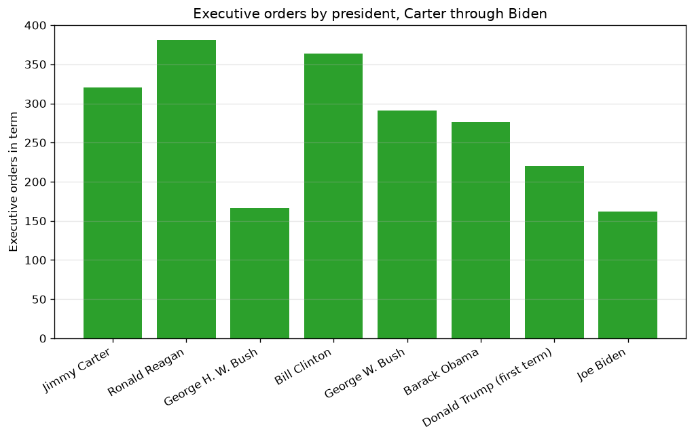
Executive orders by president.
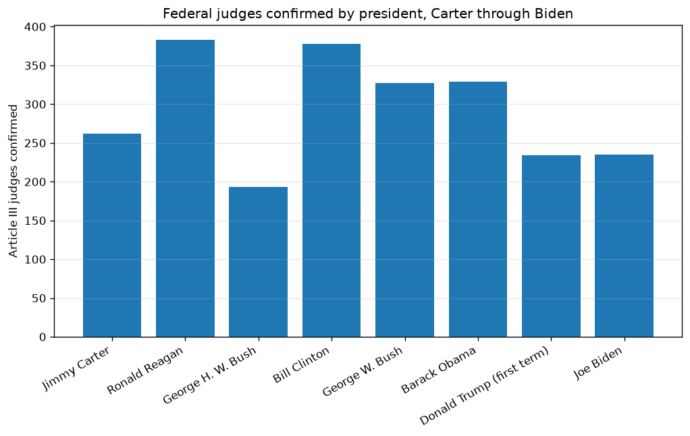
Federal judges confirmed, by president.
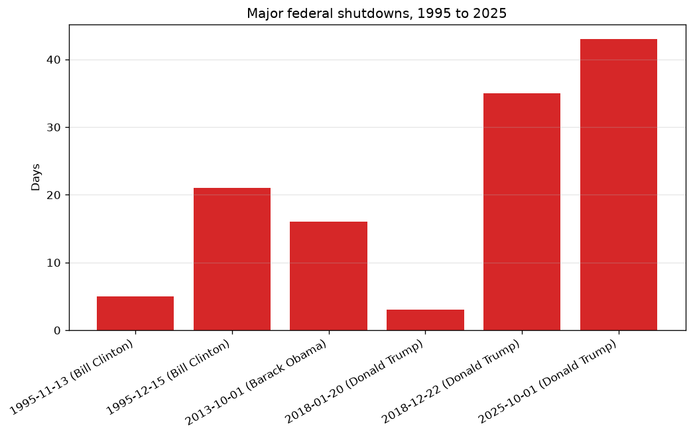
Major shutdowns since 1995, 123 days in total.
The House has 218 seated Republicans, 214 seated Democrats, 1 independent who caucuses with Republicans, and 2 vacant seats, for a working margin of 219 to 214. Democrats need a net gain of 4 seats to reach 218. Thirty five Senate seats are up, 22 held by Republicans and 13 by Democrats, and Democrats need a net gain of 4 for a majority. Thirty six governorships are up, 18 held by each party. The latest forecasts, all labeled with source and date in chapter 04, include Cook Political Report House ratings of October 30, 2026 (222 Democratic categories, 195 Republican categories, 18 toss-ups) and Cook Senate ratings of October 6, 2026 (47 Democratic aligned, 46 Republican, 7 toss-ups). Scenarios for the rest of the Trump term, which ends January 20, 2029, are presented neutrally: a held trifecta, a Democratic House, a Democratic Senate, and split outcomes. None is presented as expected.
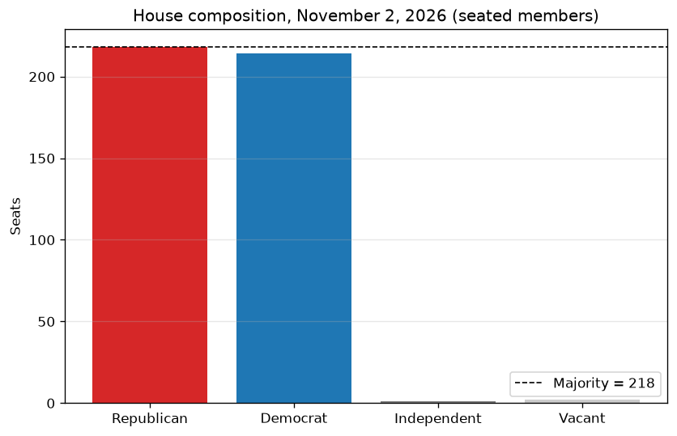
The House going into November 2026.
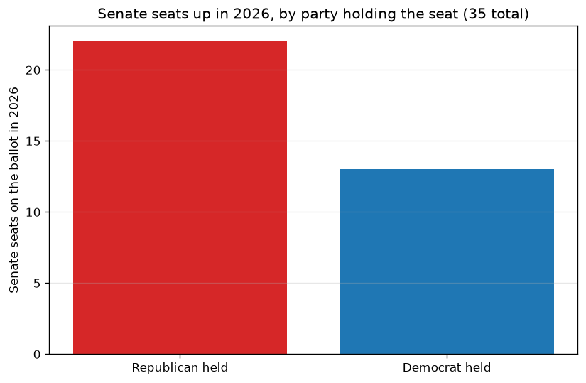
Senate seats on the ballot in 2026.
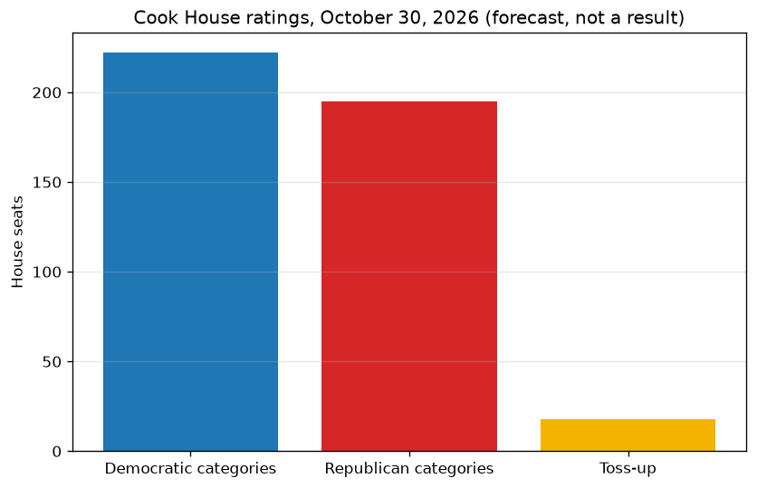
Cook House ratings, October 30, 2026, as reported.
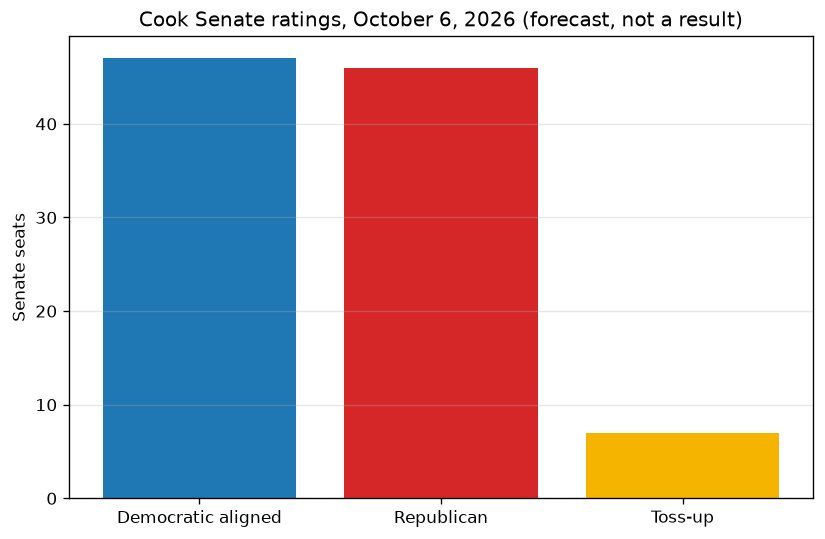
Cook Senate ratings, October 6, 2026, as reported.
When the results land, read them against this history: did the president's party lose the usual number of seats, or beat the pattern? Did a trifecta survive, or fall, as it has in five of six cases? Did the forecast categories hold, or did the toss-ups break one way? Chapter 05 has the update checklist: fill in official results, add a 2026 row to the midterm history table, recompute the averages, and keep the October 2026 forecasts untouched so the project stays an honest pre election record.
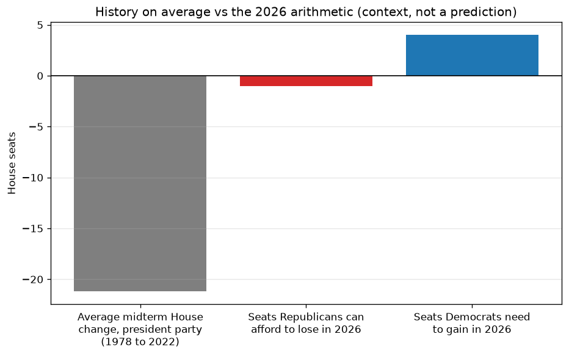
The historical pattern, against the 2026 starting point.
Bills enacted per Congress was cut: no clean, verified per Congress table was secured, so chapter 03 uses vetoes, executive orders, confirmations, and shutdowns instead. No House seat map is included, because it would need district shapefiles and add little to the seat count story. District level 2026 race ratings are presented as aggregates only, because individual race ratings change frequently. Governor toss-up counts are cut, because sources conflict (5 vs 3). No single 2026 prediction is presented, by design. Everything cut is documented in BUILD_REPORT.md.